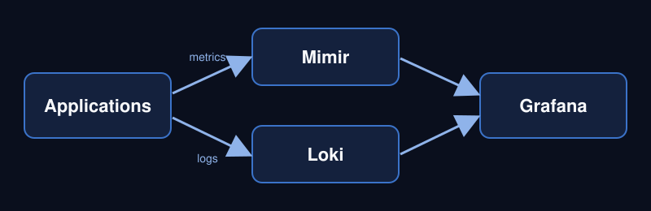

Observability
Metrics and logs flow into one stack, so dashboards and alerts share the same data.

Tools at a glance
- Kubernetes
- Google Kubernetes Engine clusters for production, development and tooling.
- ArgoCD
- GitOps delivery: the cluster follows what is in Git.
- External Secrets Operator
- Reads secrets from Google Secret Manager into the cluster.
- Grafana, Mimir and Loki
- Dashboards, metrics and logs.
- AWS
- ECS and Systems Manager for customer workloads.
Find me online
My code for this course lives on GitHub.